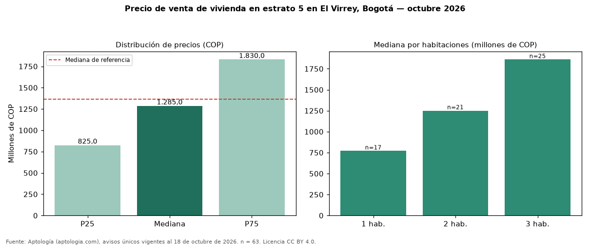

Precio de venta de vivienda en estrato 5 en El Virrey, Bogotá — octubre 2026
Con 63 avisos únicos, el precio mediano de vivienda en estrato 5 en venta en El Virrey, Bogotá es COP 1,28 mil millones. Frente a toda la oferta de venta en El Virrey (COP 1,36 mil millones), la diferencia es de 6 % por debajo. Por metro cuadrado, la mediana es COP 12.307.692/m² (+4 % frente a COP 11.842.105/m²). Cruzando con la oferta de arriendo equivalente, la rentabilidad bruta implícita es 6,7 % anual. El rango intercuartílico va de COP 825 millones a COP 1,83 mil millones (razón 2,2). Por habitaciones: 1 habitación, COP 770 millones (n = 17); 2 habitaciones, COP 1,25 mil millones (n = 21); 3 habitaciones, COP 1,86 mil millones (n = 25). El área mediana es 112 m² (referencia: 135 m²). Datos abiertos CC BY 4.0 de Aptología; fuente y búsqueda de inmuebles: https://www.aptologia.com/estrato-de/bogota/el-virrey. Archivos: PDF de 2 páginas, CSV con las cifras y gráfica PNG.

| Avisos únicos | 63 |
|---|---|
| Percentil 25 | COP 825.000.000 |
| Mediana | COP 1.285.000.000 |
| Percentil 75 | COP 1.830.000.000 |
| Mediana por m² | COP 12.307.692 |
Fuente: avisos vigentes de portales inmobiliarios recopilados por Aptología, deduplicados (mínimo 30 avisos únicos por celda). Precios pedidos, no cerrados. Fecha: 2026-10-18.